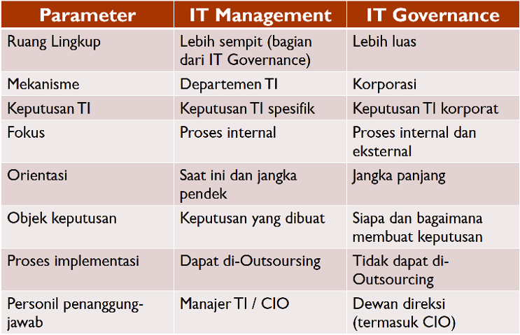

resume materi
Resume Materi 1
Apa perbedaan Management, Government dan Governance
?
- Management :Merupakan pimpinan perusahaan / organisasi atau tindakan perencanaan, pengorganisasian, pengambilan keputusan, dan kontrol sebuah perusahaan/organisasi .Jika studi kasusnya di kampus STMIK Antar Bangsa maka Ust Tarmizi termasuk ke dalam management.
- Governance (tata kelola):Yaitu rangkaian proses, kebijakan, aturan, budaya, dan organisasi dalam mengelola sesuatu. Jika studi kasusnya di kampus STMIK Antar Bangsa maka Ust Tarmizi dan STMIK Antar Bangsa termasuk ke governance.
- Government (pemerintah):Lembaga/organisasi dan orang yang menjalankan tata-kelola (sebuah negara).
Governance VS Government
- Government dibangun untuk menjalankan governance
-
Organisasi Politik :
Government/pemerintahan.
Organisasi Bisnis : Corporation/korporat. -
Good Corporate Governace : Penataan organisasi
bisnis melalui penerapan model dan prinsip-prinsip
tatakelola organisasi yang baik.
Good Government Governance : Penataan organisasi pemerintah melalui penerapan model dan prinsip-prinsip tatakelola organisasi yang baik
Apa itu IT Governance?
“is specifying the decision rights and
accountability framework to encourage desirable
behaviour in the use of IT” (Well & Woodham,
2002)
“is the responsibility of executives and the
board of directors, and consists of the
leadership, organizational structures and
processes that ensure that the enterprise’s IT
sustains and extends the organization’s strategy
and objectives.” (ITGI, 2005)
IT Governance VS IT Management
Pada dasarnya IT Management adalah bagian dari IT Governance
- Tata-kelola TI (IT governance) : Memiliki cakupan lebih luas, fokus pada bagaimana merencanakan dan mengimplementasikan TI untuk memenuhi kebutuhan bisnis saat ini dan masa datang (fokus internal) dan kebutuhan pelanggan (fokus eksternal).
- Manajemen TI (IT management) : Lebih fokus pada bagaimana menyediakan layanan & produk TI bagi internal perusahaan saat ini.

Mengapa butuh IT Governance?
IT Governance dibutuhkan pada saat layanan & masa depan
perusahaan
sangat tergantung pada informasi & pengetahuan
(knowledge-based economy).
Contoh bisnis dengan ketergantungan TI yang sangat tinggi antara lain : penerbangan (ticketing, check-in, traffic control), perbankan.
Contoh bisnis dengan ketergantungan TI yang sangat tinggi antara lain : penerbangan (ticketing, check-in, traffic control), perbankan.
Sumber : PPT Mata Kuliah IT Governance - E-Learning STMIK Antar Bangsa